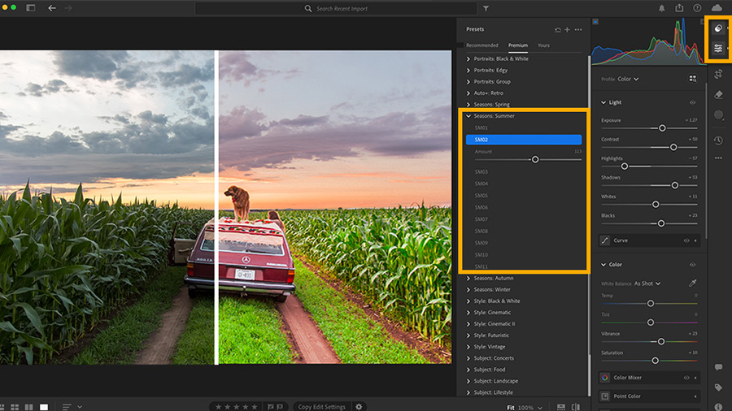

Le traitement d'image numérique
Le traitement d'image consiste à modifier une photo numérique
à l'aide d'un logiciel. On peut changer les couleurs, la luminosité,
supprimer des éléments ou appliquer des filtres.
Ces opérations sont effectuées directement sur les pixels de l'image.
Source : pixees.fr

Les étapes du traitement d'image
- Acquisition de l'image par le capteur
- Conversion des signaux en pixels numériques
- Stockage de l'image en mémoire
- Application des modifications (luminosité, couleurs...)
- Compression de l'image (JPEG, PNG...)
- Enregistrement final sur la carte mémoire
Les principaux types de traitements
- Luminosité / Contraste : rendre l'image plus claire ou plus sombre
- Recadrage : couper une partie de l'image
- Filtres : appliquer un effet visuel (noir et blanc, sépia...)
- Compression : réduire la taille du fichier
- Détourage : supprimer l'arrière-plan
- Netteté : améliorer la précision des contours
Comparaison des formats d'image
| Format | Extension | Compression | Utilisation |
|---|---|---|---|
| JPEG | .jpg | Avec perte | Photos courantes |
| PNG | .png | Sans perte | Images avec transparence |
| RAW | .raw | Aucune | Photos professionnelles |
| GIF | .gif | Sans perte | Animations simples |
| WebP | .webp | Avec/sans perte | Images web modernes |
Quand tu appliques un filtre Instagram sur une photo, le logiciel modifie les valeurs numériques de chaque pixel de l'image ! Une photo de 12 mégapixels contient 12 millions de pixels à modifier.
Vidéo sur le traitement d'image
Voici une vidéo pour mieux comprendre le traitement d'image :
Pour aller plus loin
Pour en savoir plus sur le traitement d'image : Wikipedia — Traitement d'images
⬆ Retour en haut